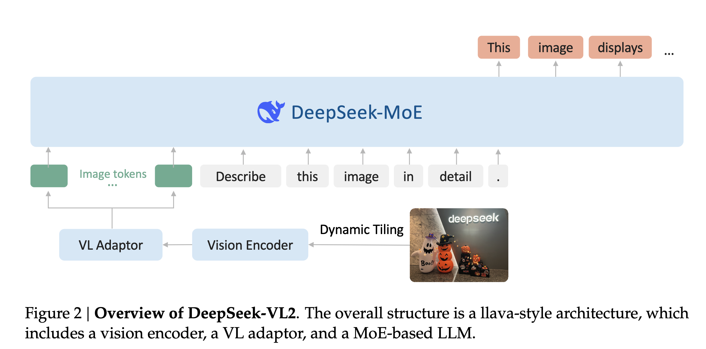
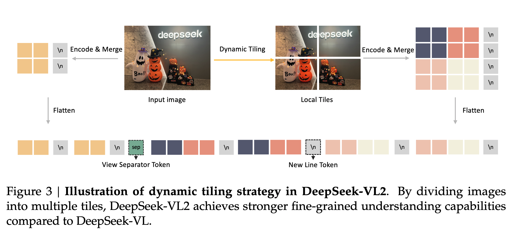
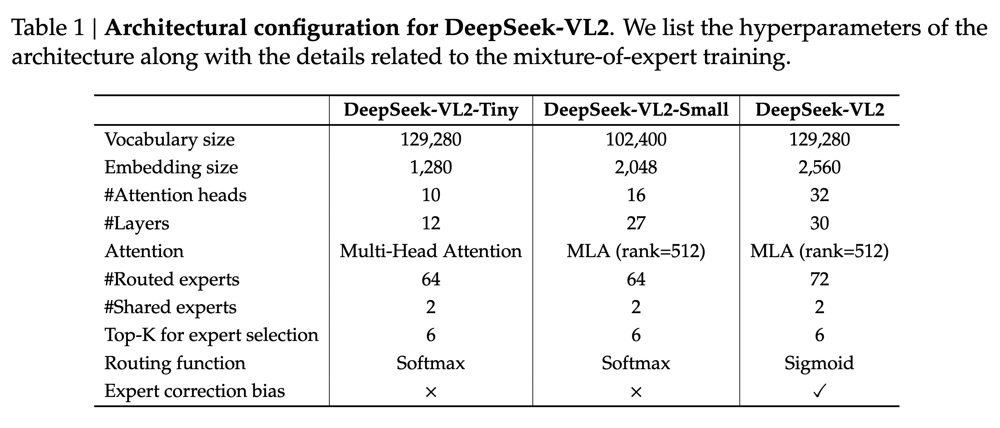
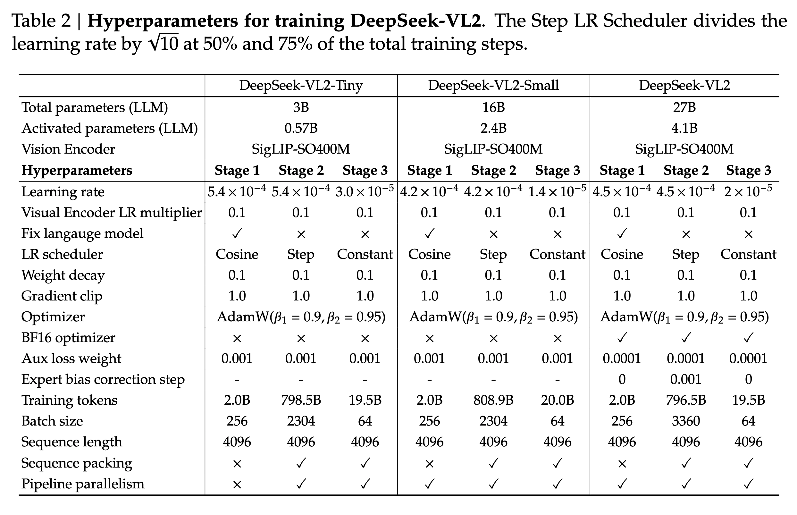
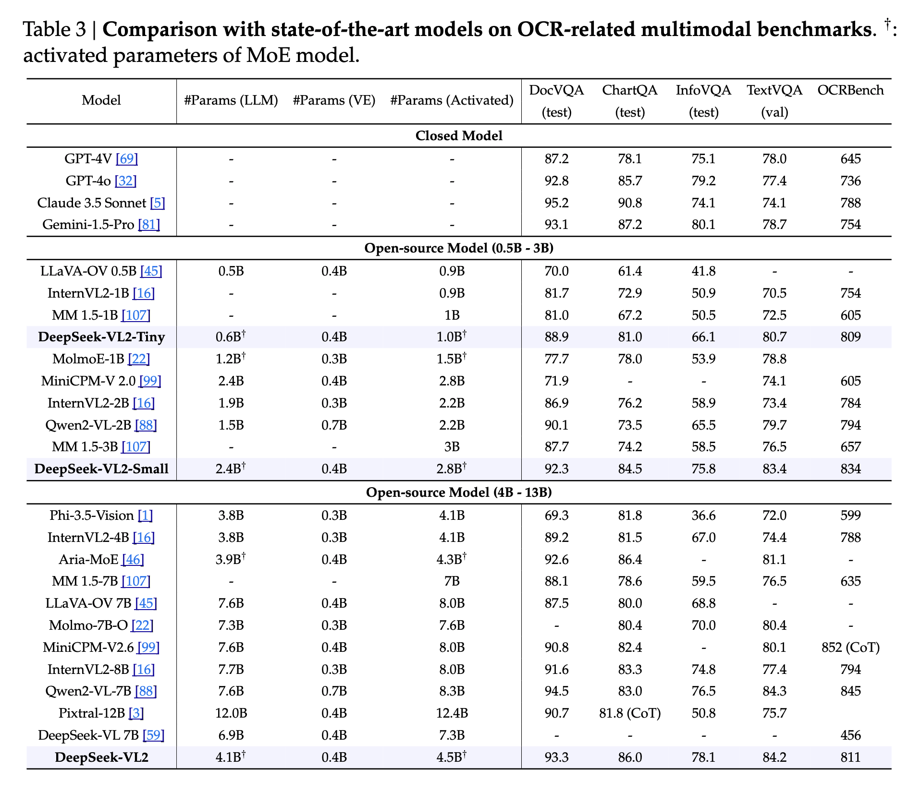
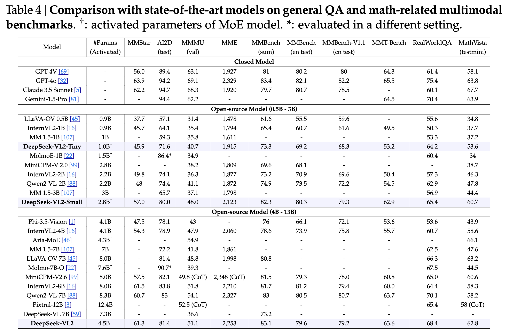

DeepSeek-VL2
Mixture-of-Experts Vision-Language Models for Advanced Multimodal Understanding
papers
summary
research
VLMs
DeepSeek presents DeepSeek-VL2, a MOE VLM. It is mostly an incremental improvement over DeepSeek-VL, with a few better design choices inspired by the latest developments in the multimodal space.

Model Architecture
Three components:
- Vision Encoder: SigLIP-SO400M-384
- Vision-Language adaptor: 2-layer MLP
- MoE Language Model: DeepSeek MoE LM
- Three variants with the following model sizes: 1.0B, 2.8B, and 4.5B.
Two major advancements:
- Dynamic tiling strategy
- DeepSeek MoE language model featuring Multi-head Latent Attention

Dynamic Tiling Strategy
- Split high-resolution images into tiles, processing varying high-resolution images using the same encoder.
- SigLIP operates at a resolution of 384px. Hence, we need some resizing strategy. The authors define a set of candidate resolutions: \(𝐶𝑅 = (𝑚 · 384, 𝑛 ·384) \ \ 𝑚 ∈ N, 𝑛 ∈ N\), and \(1 ≤ 𝑚, 𝑛, 𝑚𝑛 ≤ 9\) where \(𝑚:𝑛\) represents the aspect ratio.
- Given an input image of size (HxW), the authors first calculate the padding required for each candidate resolution. Then, they select the resolution \((𝑚_i · 384, 𝑛_𝑖 · 384)\) that minimizes the padding area.
- The resized image is then divided into \(𝑚_𝑖 × 𝑛_𝑖\) local tiles of 384 × 384 pixels, plus one global thumbnail tile T.
- The encoder processes all the (1 + \(𝑚_𝑖 × 𝑛_𝑖\)) tiles, yielding (27 × 27 = 729) visual embeddings of 1152 dimensions per tile.
- Dynamic tiling is disabled when processing multiple (> 2) images.

Vision-Language Adaptor
- Applies a (2 × 2) pixel shuffle operation to compress the number of visual tokens for each tile from (27 × 27) to (14 × 14 = 196) tokens.
- Three special tokens are added to these tiles.
- For the global thumbnail tile (14 × 14), the authors add another 14
tokens at the end of each row, resulting in a total number of (14 × 15 = 210) tokens. - The (mi x ni) local tiles are arranged in a 2D grid of shape \((𝑚_𝑖·14,\ 𝑛_𝑖·14)\), and \((𝑚_𝑖·14)\)
tokens are appended at the end of the final column to indicate the end of a row of all the local tiles. - A
token is inserted between the global thumbnail tile and local tiles. The complete visual sequence contains \((210 + 1 + (𝑚_𝑖 · 14 \ × \ (𝑛_𝑖 · 14 \ + 1))\) visual tokens. - These tokens are then projected into the language model’s embedding space using a two-layer MLP.
DeepSeekMoE LLM
- Based on the DeepSeekMoE model.
- Multi-head Latent Attention mechanism.
- Contains a global bias term for each expert to improve load balancing between experts.
Training
- Stage1: Alignment
- Vision-Language alignment stage
- The alignment stage trains the MLP connector to bridge the pretrained visual encoder and the LLM.
- ShareGPT4V dataset containing approximately 1.2M caption and conversation samples is used for training in this stage.
- Stage2: Pre-training
- All components, including the vision encoder, connector, and language model, are trainable in this stage.
- Approximately 800B image-text tokens used in this phase.
- 70% VL data to 30% text-only data. The text-only data is sourced from the pretraining corpus of DeepSeek LLM.
- The VL dataset consists of the following kinds of datasets: Interleaved image-text datasets, image captioning datasets, OCR datasets, VQA datasets, Visual-grounding datasets containing annotations for object detection, and grounded conversation datasets.
- Stage3: Fine-tuning
- All components, including the vision encoder, connector, and language model, are trainable in this stage as well.
- Trained on a mix of publicly available datasets, and in-house datasets.
- Datasets include general VQA, OCR datasets, tables and chart understanding datasets, reasoning and mathematics-focused datasets, textbooks, visual grounding, etc.

Results
Here are some results from the paper:

